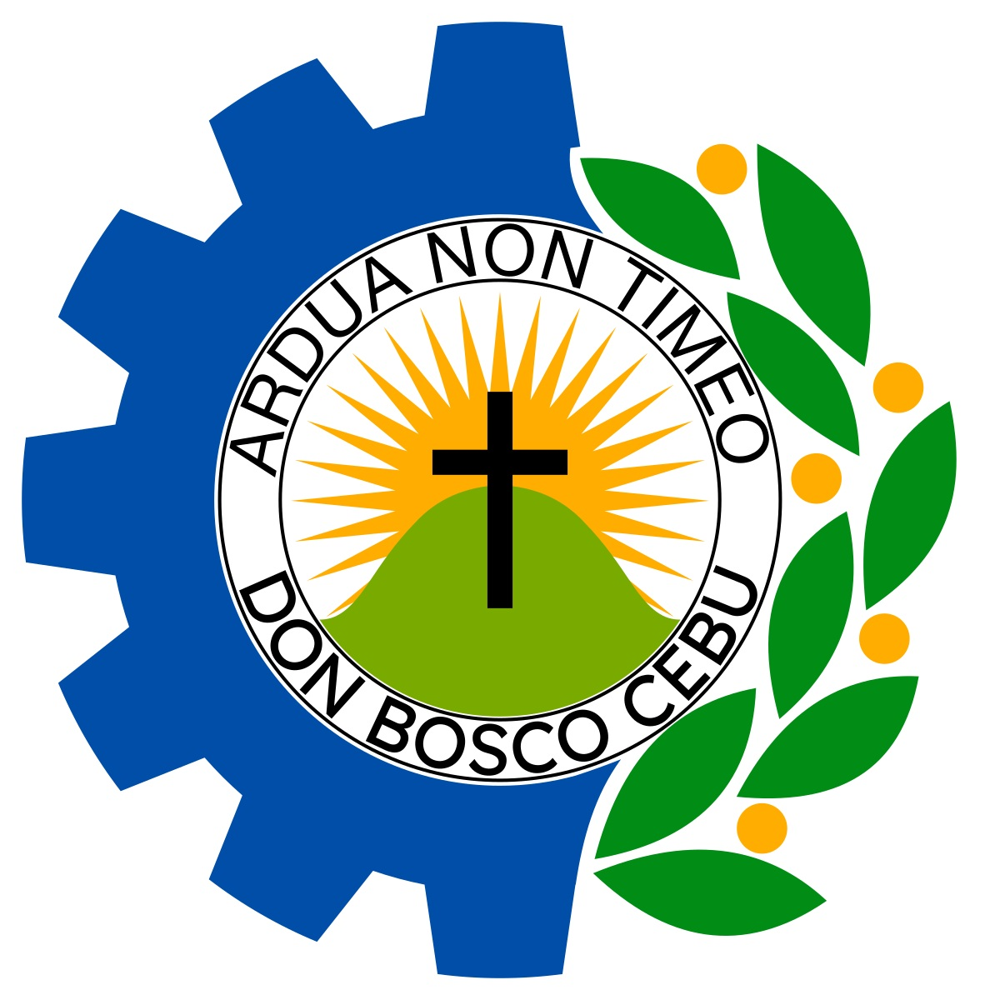

<!-- Mike Reguelle P. Vistal --> 
<title>Mike Reguelle P. Vistal</title>
<head>
 <link rel="stylesheet" type="text/css" href="mystyle.css">
<style> 
 body 
  { 
  display: grid;
  grid-template-areas:
    "header1 header2 header3 header4"
    "side main main main"
    "side footer footer footer";
  grid-gap: .3rem;
  grid-template-rows: 80px 3fr 70px;  
  grid-template-columns: 1fr 1fr 1fr 1fr;
  grid-row-gap: 10px;
  grid-column-gap: 10px;
  height: 100vh;
  margin: 10px;
  margin-top: 5px;
  } 
header1, header2, header3, header4 {
  padding: 1.2em;
  font-size: 20px;
  background: rgb(127,255,212);
  }
#pageHeader1:hover {
  box-shadow: 0 12px 16px 0 rgba(0,0,0,0.24),0 17px 50px 0 rgba(0,0,0,0.19);
  grid-area: header1;
  font-size: 20px;
  font-family: Arial;
  text-shadow: 1px 1px 2px black, 0 0 25px blue, 0 0 2px darkblue;
  Background-color: rgb(127,255,212);
  }
#pageHeader2:hover {
  box-shadow: 0 12px 16px 0 rgba(0,0,0,0.24),0 17px 50px 0 rgba(0,0,0,0.19);
    grid-area: header2;
  font-size: 20px;
 font-family: Arial;
  text-shadow: 1px 1px 2px black, 0 0 25px blue, 0 0 2px darkblue;
  Background-color: rgb(127,255,212);
  }
#pageHeader3:hover {
  box-shadow: 0 12px 16px 0 rgba(0,0,0,0.24),0 17px 50px 0 rgba(0,0,0,0.19);
    grid-area: header3;
  font-size: 20px;
 font-family: Arial;
  text-shadow: 1px 1px 2px black, 0 0 25px blue, 0 0 2px darkblue;
  Background-color: rgb(127,255,212);
  }
#pageHeader4:hover {
  box-shadow: 0 12px 16px 0 rgba(0,0,0,0.24),0 17px 50px 0 rgba(0,0,0,0.19);
    grid-area: header4;
  font-size: 20px;
 font-family: Arial;
  text-shadow: 1px 1px 2px black, 0 0 25px blue, 0 0 2px darkblue;
  Background-color: rgb(127,255,212);
  }
#pageFooter {
  grid-area: footer;
  Background-color: rgb(102,205,170);
  }
#mainArticle { 
  grid-area: main;
  }
#mainNav { 
  grid-area: side;
  Background-color: rgb(0,206,209);
  text
  }
</style>
</head>
  <header1 id="pageHeader1"><a href="photo.html" target="iframe_a">AKONG BALAY</a></header1>
  <header2 id="pageHeader2"><a href="02.html" target="iframe_a">KINSA AKO</a></header2>
  <header3 id="pageHeader3"><a href="03.html" target="iframe_a">AKONG KALINGAWAN</a></header3>
  <header4 id="pageHeader4"><a href="04.html" target="iframe_a">AKONG MGA KINAHAM</a></header4>
  <main id="mainArticle">
            <iframe src="photo.html" name="iframe_a" height="100%" width="100%" allowfullscreen="true" style="border:none;" title="Iframe Example"></iframe>
  </main>
  <side id="mainNav">
    
    <p style="text-align:left;">Don Bosco Technical College–Cebu is a private Catholic vocational basic and higher education institution in Cebu City managed by the Philippines South Province (FIS) of the Salesians of the Society of Saint John Bosco. The basic education department accepts male students only except the Senior High School which is coeducational. The TVED and college department are also coeducational. It was established as a center for out-of-school youth by Italian Salesian missionaries in 1954 and later developed into a technical school.[2] It was originally named as Don Bosco Technical High School but commonly called 'Boys' Town' in the city. It was later renamed Don Bosco Technology Center and in 2017 as Don Bosco Technical College. A namesake and sister school exists in Mandaluyong.</p>
  </side>
  <footer id="pageFooter"><p style="text-align:center;">MIKE REGUELLE PADILLO VISTAL FIRST WEBSITE (ALL RIGHTS RESERVED - 2022)</p></footer>
</body>
